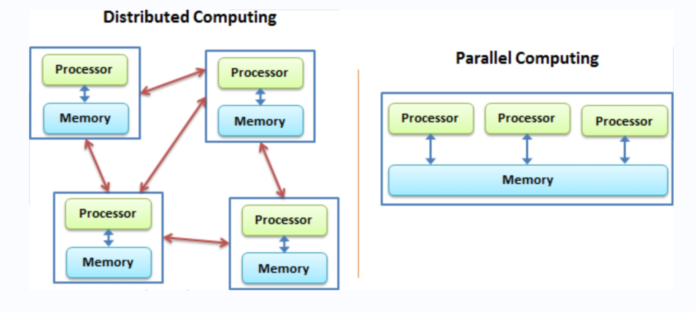

13 从本地到集群：大数据分布式计算
在大数据时代，单一计算机的处理能力已无法满足海量数据分析的需求，因此分布式计算应运而生。从本地计算扩展到集群计算，通过将数据和计算任务分散到多台计算机上并行处理，不仅显著提升了计算速度，还增强了系统的可靠性和可扩展性。R语言作为数据科学和统计分析的强大工具，通过与Apache Spark的结合，进一步扩展了其在大数据环境中的应用能力。本章将对分布式计算进行介绍，并展示如何使用sparklyr包在R语言中实现分布式计算。
13.1 分布式计算简介
从本质上来讲，其实分布式计算是我们先前介绍的并行计算的一种特例（见图13.1），但是它的每一个任务不是由单个计算机的多进程或多核心进行处理，而是直接在多个机器中并发处理。分布式系统是一组电脑，透过网络相互连接传递消息并协调它们的行为而形成的系统，组件之间彼此进行交互以实现一个共同的目标。下面我们将会对分布式计算概念的各方面进行简要介绍。
13.1.1 基本原理
分布式计算的基本原理是将任务分解为多个子任务，并将这些子任务分配给多个独立的计算节点进行并行处理。每个节点独立执行分配给它的任务，并将结果返回给一个集中管理的节点进行汇总。这种方式能够充分利用多台计算机的计算资源，达到加速计算和提高效率的目的。
13.1.2 关键组成部分
- 计算节点：分布式系统中的每个独立计算单元。节点可以是物理计算机或虚拟机。
- 任务调度器：负责将任务分解并分配给不同计算节点的系统。任务调度器还负责监控任务的执行情况，处理节点故障和任务重试。
- 数据存储：用于存储分布式系统中的数据。常见的分布式数据存储系统包括HDFS和Apache Cassandra等。
- 通信机制：节点之间通过网络进行通信，交换数据和状态信息。常用的通信协议包括TCP/IP、RPC（远程过程调用）等。
13.1.3 特性
- 扩展性：分布式系统可以通过增加更多的计算节点来提升整体性能和处理能力，几乎可以无限制地扩展。
- 容错性：分布式系统可以通过冗余和备份机制实现故障容错，即使某个节点出现故障，系统仍然能够继续运行。
- 资源利用率高：能够充分利用分布在不同位置的计算资源，提高资源利用效率。
13.1.4 应用场景
- 大数据处理：分布式计算广泛应用于大数据分析、数据挖掘和数据清洗等领域。例如，电商平台可以使用分布式计算分析用户行为数据，优化推荐系统。
- 科学计算：在基因组学、气象预测、天体物理等需要大量计算资源的科学研究中，分布式计算能够显著加速数据处理和模拟仿真过程。
- 金融分析：金融机构使用分布式计算进行实时交易分析、风险管理和市场预测，以应对海量数据和高频交易的需求。
13.2 分布式工具概览
在大数据处理的过程中，选择合适的分布式计算框架至关重要。不同的框架在架构、功能和应用场景上各具特色，为用户提供了多样化的选择。以下将详细介绍几种常见的分布式计算框架，包括 Apache Hadoop、Apache Spark 和 Apache Flink（图标见图13.2），解析它们的独特优势及应用场景。
Apache Hadoop 是一个开源的分布式计算框架，被广泛用于处理和存储大规模数据集。Hadoop 的核心组件包括 HDFS (Hadoop Distributed File System) 和 MapReduce。HDFS 是一个分布式文件系统，旨在以高吞吐量和高容错性存储大量数据，通过将数据分成块并分布在集群中的不同节点上来实现数据的冗余和高可用性。MapReduce 则是一种编程模型，用于并行处理大规模数据集，通过将任务分解为“Map”阶段和“Reduce”阶段，使计算能够分布在多个节点上进行。Hadoop 的优势在于其处理大规模数据的能力和高容错性，但其批处理模式在处理实时数据时表现不佳，且任务调度和管理相对复杂。
Apache Spark 是一个快速、通用的分布式计算引擎，支持批处理、流处理和机器学习等多种任务类型。Spark 的内存计算能力使其比 Hadoop 更加快速，特别是在迭代计算任务（如机器学习算法）中表现尤为突出。Spark 提供了丰富的编程接口，包括 Spark Core、Spark SQL、Spark Streaming、MLlib（机器学习库）和 GraphX（图计算库），使得用户可以方便地实现复杂的数据处理和分析任务。Spark 具有很好的扩展性，能够处理从单机到数千节点的大规模集群。Spark 的优势在于其高效的内存计算和广泛的应用场景，但其挑战主要在于对内存的高需求以及需要优化内存管理和任务调度。
Apache Flink 是一个专注于流处理的分布式计算框架，特别适合实时数据处理和复杂事件处理。与 Spark 的微批处理模式不同，Flink 采用了真正的流处理模式，能够实时处理数据流，并提供低延迟的计算结果。Flink 提供强大的状态管理功能，能够高效地管理和恢复计算状态，确保流处理任务的准确性和可靠性。此外，Flink 提供了多种 API，包括 DataStream API、DataSet API 和 Table API，支持流处理和批处理任务的统一编程模型。Flink 的优势在于其强大的流处理能力和状态管理机制，适合实时数据分析和复杂事件处理，但其挑战在于相对复杂的编程模型和高资源需求。
不同的分布式计算框架各有优劣，选择时应根据具体的应用场景和需求进行评估和选型。在实际应用中，可能需要结合多种技术框架，以最佳方式处理和分析大规模数据。Hadoop 适合处理大规模批处理任务和存储大量数据，Spark 适合多种数据处理任务并在需要高效迭代计算的场景中表现优异，而 Flink 则专注于实时流处理，非常适合实时数据分析和复杂事件处理。
13.3 基于sparklyr的实现
sparklyr是专为 R 语言设计的包，旨在通过直观的接口简化与 Apache Spark 的集成。它允许用户使用熟悉的 dplyr 语法操作 Spark 数据帧，从而进行高效的数据处理和分析，支持大规模数据集和复杂计算任务，并提供与 Spark SQL、机器学习库的深度集成，是处理大数据的强大工具。本部分将会介绍如何使用该工具来进行分布式计算，不过读者只需要在自己的个人计算机上就可以运行这些代码并进行实现。当你具有Spark集群条件的时候，只需要在配置连接的代码上稍作修改，其他代码就可以原封不动地对大规模数据进行分布式操作。
13.3.1 配置
首先，我们需要加载必要的包：
library(pacman)
p_load(sparklyr,tidyverse)此外，由于因为 Spark 是使用 Scala 编程语言构建的，而 Scala 运行在 Java 虚拟机（JVM）上，因此您还需要在系统上安装 Java 8。如果尚未安装，可以到Java官网进行下载。如果已经安装了，可以运行以下代码进行验证：
system("java -version")然后，我们必须在计算机上安装Spark，sparklyr提供了便捷的安装方法：
spark_install()事实上我们可以可以手动进行解压、安装和路径配置，感兴趣的读者可以键入?spark_install进行查阅。
13.3.2 连接
对数据的连接，可以使用spark_connect函数进行实现，这里我们使用本地连接：
sc <- spark_connect(master = "local")如果需要关闭连接，可以使用spark_disconnect函数：
spark_disconnect(sc)关于连接到其他集群的各种操作，可以参考官方的配置文档进行查阅。
13.3.3 读取
把数据导入到Spark数据库中有两种方法，一种方法是利用copy_to函数从R环境中导入：
tbl_mtcars <- copy_to(sc, mtcars, "spark_mtcars")
tbl_mtcars
#> # Source: spark<spark_mtcars> [?? x 11]
#> mpg cyl disp hp drat wt qsec vs am
#> <dbl> <dbl> <dbl> <dbl> <dbl> <dbl> <dbl> <dbl> <dbl>
#> 1 21 6 160 110 3.9 2.62 16.5 0 1
#> 2 21 6 160 110 3.9 2.88 17.0 0 1
#> 3 22.8 4 108 93 3.85 2.32 18.6 1 1
#> 4 21.4 6 258 110 3.08 3.22 19.4 1 0
#> 5 18.7 8 360 175 3.15 3.44 17.0 0 0
#> 6 18.1 6 225 105 2.76 3.46 20.2 1 0
#> 7 14.3 8 360 245 3.21 3.57 15.8 0 0
#> 8 24.4 4 147. 62 3.69 3.19 20 1 0
#> 9 22.8 4 141. 95 3.92 3.15 22.9 1 0
#> 10 19.2 6 168. 123 3.92 3.44 18.3 1 0
#> # … with more rows, and 2 more variables: gear <dbl>,
#> # carb <dbl>另一种方法则是从本地的文件直接进行导入，大致形式如下：
spark_read_csv(sc, name = "test_table", path = "/data/test.csv")sparklyr支持直接读入的文件包括CSV、JSON、Parquet等。此外，不仅仅可以对这些格式的文件进行读入，还可以写出不同格式的文件，更多的信息可以参考相关的帮助文档（https://spark.posit.co/packages/sparklyr/latest/reference/index.html#spark-data）。
13.3.4 清洗
在sparklyr中，我们可以直接使用dplyr命令来对数据进行操作：
tbl_mtcars %>%
group_by(vs,am) %>%
summarise(
count = n(),
hp = mean(hp,na.rm = TRUE),
drat = mean(drat,na.rm = TRUE)
)
# # Source: SQL [4 x 5]
# # Database: spark_connection
# # Groups: vs
# vs am count hp drat
# <dbl> <dbl> <dbl> <dbl> <dbl>
# 1 1 1 7 80.6 4.15
# 2 0 1 6 181. 3.94
# 3 1 0 7 102. 3.57
# 4 0 0 12 194. 3.12在底层，其实这些代码都转化为了SQL语句，如果需要观察，可以使用show_query函数，这与我们之前介绍的数据库操作是一致的：
tbl_mtcars %>%
group_by(vs,am) %>%
summarise(
count = n(),
hp = mean(hp,na.rm = TRUE),
drat = mean(drat,na.rm = TRUE)
) %>%
show_query()
# <SQL>
# SELECT `vs`, `am`, COUNT(*) AS `count`, AVG(`hp`) AS `hp`, AVG(`drat`) AS `drat`
# FROM `spark_mtcars`
# GROUP BY `vs`, `am`事实上，我们也可以直接使用SQL语句从中调取数据：
p_load(DBI)
dbGetQuery(sc,"SELECT vs, am, hp FROM spark_mtcars LIMIT 5")
# vs am hp
# 1 0 1 110
# 2 0 1 110
# 3 1 1 93
# 4 1 0 110
# 5 0 0 175本部分与数据库操作基本一致，因此不再进行赘述。
13.3.5 建模
在R中对处于Spark集群的数据进行分析，都是依赖把R命令转化为Spark能够理解的指令来实现的，sparklyr把这些指令转化为见名知意的R代码，下面我们来简单进行展示：
# 只选取其中3列，并划分训练集（70%）和测试集（30%）
partitions <- mtcars_tbl %>%
select(mpg, wt, cyl) %>%
sdf_random_split(training = 0.7, test = 0.3)
# 利用训练集拟合线性模型
fit <- partitions$training %>%
ml_linear_regression(mpg ~ .)
# 利用模型对测试集进行预测
pred <- ml_predict(fit, partitions$test)我们可以观察到，这里的sdf_random_split和ml_predict都是sparklyr提供的机器学习函数，能够协助我们对集群中的数据进行类似在R中开展的机器学习操作。关于更多在Spark中实现机器学习的操作，可以参考官方文档（https://spark.posit.co/guides/mlib.html）。
13.4 小结
本章我们对分布式计算进行了了解，并学会如何使用sparklyr包来在R中对分布式计算进行实现。我们所介绍的功能只是冰山一角，更多的内容可以参考sparklyr的官方指南。我们相信，随着前沿工具的蓬勃发展，分布式计算的实现工具会越来越便利，这意味着用户在不清楚底层逻辑的前提下就能够自由地对数据进行调度、处理和建模。正因为有这样的愿景，因此本章没有对更多的技术细节进行深究。相信通过对基本概念的了解，未来读者将会用到更加便捷的工具，从而在应对大规模数据集的时候更加从容地利用分布式计算方法开展分析。